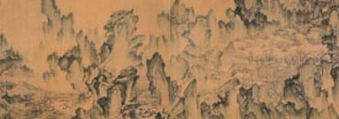
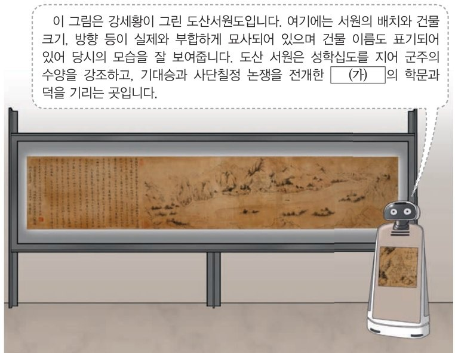
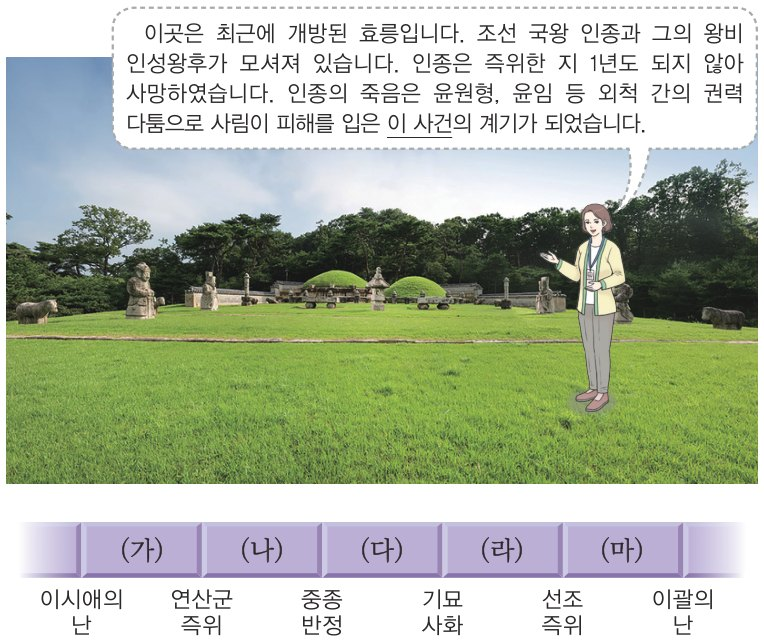
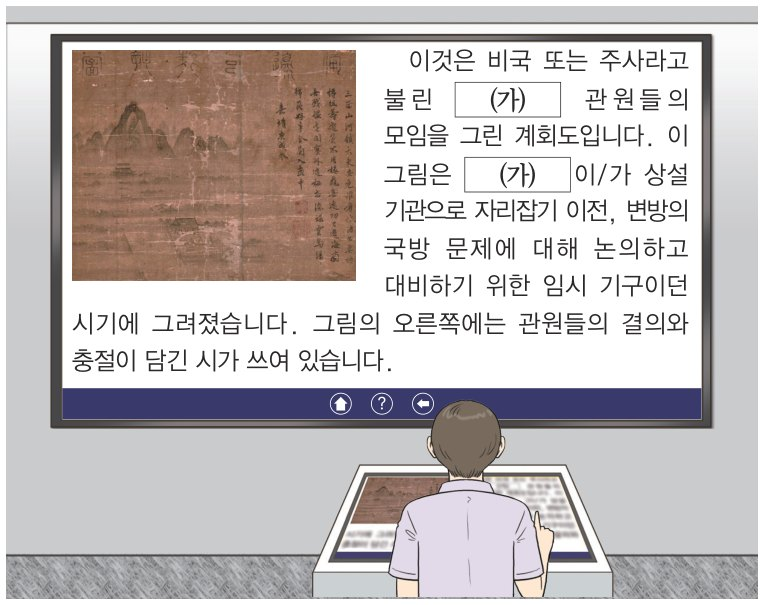
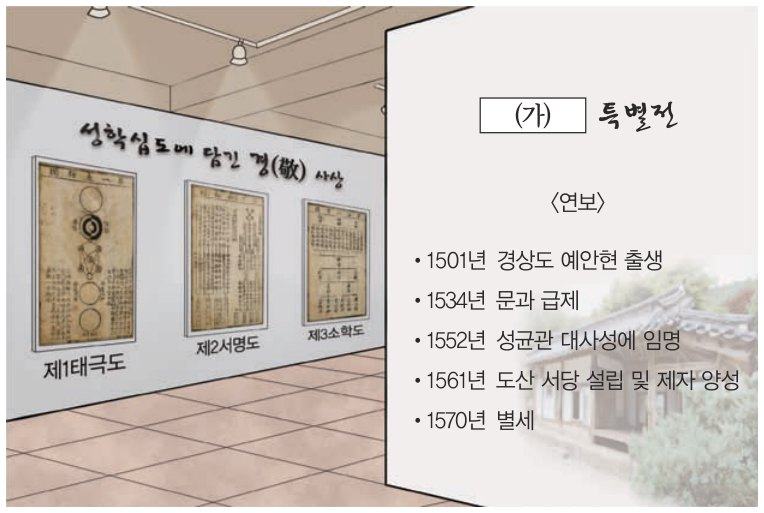

앞 단원에서 살펴본 바와 같이, 제9대 성종은 ｢경국대전｣을 완성·반포하고 홍문관과 관수관급제를 정비하는 한편, 세조의 계유정난 이래 의정부·6조 고위직과 왕실 중첩 혼인, 대토지·노비와 공납 방납을 독점하며 비대해진 훈구파를 견제하려는 목적에서 영남 지방에서 올라온 김종직과 그 문인들을 중앙 정계에 본격 등용하였습니다. 고려 말 온건파 사대부인 정몽주·길재의 학통을 계승하여 영남과 기호의 향촌에서 중소 지주 기반 위에 성리학을 연마하던 사림파는 주로 언론 삼사(3사: 사헌부·사간원·홍문관)에 포진하여 왕도 정치와 도덕적 명분, 향촌 자치를 내세우며 훈구 대신들의 부패와 특권을 거침없이 탄핵하였습니다. 이에 기득권을 위협받은 훈구파와 신하들의 직언·언론 견제를 불편해하던 국왕의 이해관계가 맞물리면서 네 차례의 사화가 연이어 터졌습니다. 먼저 연산군 때인 1498년, 김종직이 세조의 단종 왕위 찬탈을 초나라 항우의 의제 살해에 빗대어 풍자한 ｢조의제문｣을 제자 김일손이 ｢성종실록｣ 편찬 과정의 사초에 수록하자, 이극돈·유자광 등 훈구파가 이를 왕조 정통성에 대한 반역으로 몰아 김일손을 처형하고 김종직을 부관참시한 무오사화(1498년)가 일어났습니다. 뒤이어 1504년에는 연산군 생모인 폐비 윤씨 사사 사건의 전말과 관련자 명단을 임사홍이 연산군에게 밀고하자, 과거 폐비에 찬성하거나 방조했던 김굉필·정여창 등 사림파는 물론 윤필상·한명회 등 훈구 대신까지 함께 숙청당한 갑자사화(1504년)가 폭발하였습니다. 이후 연산군이 사간원과 경연을 폐지하고 한글 탄압까지 일삼는 폭정이 극에 달하자, 위기를 느낀 박원종·성희안·유순정 등 무신과 훈구 세력이 1506년 중종반정을 일으켜 연산군을 폐위(강화 교동도 유배)하고 진성대군(중종)을 추대하였습니다.
그러나 반정으로 추대된 제11대 중종은 자신을 세워 준 반정 공신(정국공신)들이 막대한 토지와 관직을 독점하며 왕권을 압박하는 새로운 위기에 직면하였습니다. 이에 중종은 공신 세력을 꺾고 왕권을 회복하겠다는 목적 아래, 훗날 용인 심곡서원에 배향되는 신진 사림의 영수 조광조를 대사헌에 발탁하여 도학 정치를 밀어붙였습니다. 조광조는 유교적 이상 사회를 실현하기 위해 첫째, 덕행과 학식이 뛰어난 인재를 추천받아 국왕 앞 대책 시험(친시)으로 등용하는 천거제인 현량과를 실시하여 사림을 대거 끌어들였고, 둘째, 도교 제사(초제)를 주관하던 관청인 소격서를 폐지하여 성리학적 이념의 순수성을 세웠으며, 셋째, 유교 윤리 입문서인 ｢소학｣ 교육과 김안국이 한글로 번역·간행한 향촌 자치 규약 ｢여씨향약｣의 보급, 경연 강화와 공납 방납 폐단 시정을 추진하였습니다. 나아가 조광조가 중종반정 때 공을 세우지 않고 거짓으로 공신에 오른 정국공신 117명 가운데 76명의 훈작과 토지를 몰수하는 위훈 삭제를 단행하자, 기득권을 빼앗길 처지에 놓인 홍경주·남곤·심정 등 훈구파는 궁궐 나뭇잎에 꿀로 '주초위왕(조씨가 왕이 된다)'이라는 글자를 써서 벌레가 파먹게 꾸민 모함 사건을 조작하였습니다. 급진적 개혁과 사림의 도덕적 압박에 피로감을 느낀 중종마저 등을 돌리면서 조광조 일파가 사사·유배되고 현량과가 폐지된 기묘사화(1519년)가 일어났습니다.
중종이 세상을 떠나고 인종이 조광조의 직위 회복 유언을 남긴 채 즉위 8개월 만에 승하한 뒤 12세의 어린 제13대 명종이 왕위에 오르자, 정국은 왕실 외척 간의 격렬한 권력 투쟁 속으로 빨려 들어갔습니다. 인종의 외삼촌인 대윤(윤임) 세력과 명종의 외삼촌인 소윤(윤원형) 및 수렴청정을 맡은 어머니 문정왕후 세력이 정권 장악을 놓고 정면으로 충돌한 것입니다. 정권을 독점하려던 소윤 윤원형 일파가 대윤 윤임 세력에게 역모 혐의를 씌워 숙청하면서, 대윤과 연계되거나 소윤의 전횡을 비판하던 사림파가 대거 희생된 사건이 을사사화(1545년)입니다. 이후 문정왕후와 윤원형은 유림의 반대를 억누르고 왕실 권위를 다지려는 의도에서 앞 단원 성종 때 도첩제를 폐지하며 억불 정책을 강화했던 것과 달리 승려 보우를 중용해 선교 양종과 승과를 일시 부활시키는 등 불교 중흥책을 폈으며, 1547년(명종 2년) 경기도 과천 양재역 벽에 '위로는 여주가 정권을 잡고 아래에서는 간신 이기가 권세를 농간하니 나라가 곧 망할 것'이라는 붉은 글씨 벽서가 나붙은 양재역 벽서 사건(정미사화)을 빌미로 남은 사림 세력을 철저히 색출하였습니다. 이때 중종에게 도학 정치를 건의하는 상소 ｢일강십목소｣와 ｢진수팔규｣를 올렸던 사림의 거두 회재 이언적이 평안도 강계로 유배되어 세상을 떠났으며(사후 경주 옥산서원 배향), 노수신·유희춘·백인걸 등 많은 사림 인사가 유배·숙청의 고초를 겪었습니다.
사화 명칭 (연도)
재위 국왕
발생 원인과 핵심 사료 키워드
결과 및 역사적 영향
1. 무오사화 (1498)
연산군
김종직이 세조의 단종 왕위 찬탈을 풍자한 ｢조의제문｣을 제자 김일손이 ｢성종실록｣ 사초에 수록
훈구파(이극돈·유자광) 고발로 김일손 처형 및 김종직 부관참시, 사림 세력 최초의 대규모 수난
2. 갑자사화 (1504)
연산군
연산군 생모 폐비 윤씨 사사 사건의 전말과 관련자 폭로 (임사홍 밀고)
폐비에 찬성·방조한 김굉필·정여창 등 사림파와 윤필상·한명회 등 훈구 대신 동시 숙청 ➔ 폭정 심화 ➔ 중종반정(1506)
3. 기묘사화 (1519)
중종
조광조의 도학 정치 개혁(현량과 실시 · 소격서 폐지 · ｢소학｣과 ｢여씨향약｣ 보급 · 정국공신 76명 위훈 삭제) 및 훈구파의 '주초위왕' 모함
조광조 사사(훗날 용인 심곡서원 배향) 및 현량과 폐지, 사림이 중앙에서 물러나 향촌 기반 다짐
4. 을사사화 (1545)
명종
왕실 외척 권력 투쟁: 인종 외척 대윤(윤임) 대 명종 외척 소윤(윤원형·문정왕후)
소윤 승리로 사림 희생, 문정왕후의 보우 등용 및 양재역 벽서 사건(1547)으로 이언적(강계 유배·경주 옥산서원) 등 추가 탄압
2. 사림의 향촌 기반(서원·향약)과 붕당 정치의 형성(동서 분당·남북 분화)
네 차례의 사화로 중앙 정계의 사림 지도부가 거듭 도륙되었음에도 불구하고, 사림파가 소멸하지 않고 16세기 후반에 이르러 오히려 중앙 정권을 완전히 장악할 수 있었던 비결은 지방으로 물러난 사림들이 향촌 사회에 튼튼한 재생산 기지를 구축한 데 있었습니다. 중앙 권력에서 밀려난 사림은 당장 조정에 복귀하는 대신, 고향에서 후학을 길러 과거로 재진출하고 지방 농민에 대한 지배력을 굳히겠다는 목적 아래 서원과 향약이라는 두 제도를 전국으로 확산시켰습니다. 첫 번째 기둥인 서원은 훌륭한 유학자를 제사 지내는 사당(제향) 기능과 지방 양반 자제들에게 성리학을 가르치는 사립 학교(강학) 기능을 결합한 향촌 사림의 구심점이었습니다. 1543년(중종 38년) 풍기 군수 주세붕이 고려 말 성리학을 처음 들여온 안향을 배향하기 위해 세운 백운동서원이 우리나라 최초의 서원이었습니다. 뒤이어 풍기 군수로 부임한 퇴계 이황은 사립 서원에 국가의 공인과 물적 지원을 끌어내어 사림의 위상을 높이려 건의하였고, 그 결과 1550년(명종 5년) 국왕 명종으로부터 친필 현판 '소수서원'과 서적·토지·노비를 하사받아 면세·면역 특권을 누리는 최초의 사액서원이 탄생하였습니다. 이는 앞 단원에서 살펴본 중앙 정부가 지방 군현마다 세워 교수·훈도 등 교관을 파견한 국립 중등 교육 기관인 향교(및 한양의 4부 학당)나 최고 국립 대학 성균관(고려 성종 대 개경의 국립 최고 교육 기관 국자감 전통 계승)과 구별되는, 지방 사림 주도의 독자적인 사립 중등 교육 기관이자 공론 형성 기지였습니다.
사림 부활의 두 번째 기둥인 향약은 전통 농촌의 상부상조 공동체 풍습(두레)에 유교의 삼강오륜 도덕 규범을 결합한 향촌 자치 규약으로(고려 말 이래 불교 신앙을 바탕으로 갯벌에 향나무를 묻는 매향 활동과 불상 조성을 주관하던 향도와는 성격이 다름), 덕업상권(좋은 일은 서로 권함)·과실상규(잘못은 서로 규제함)·예속상교(예의 있는 풍속으로 사귐)·환난상휼(어려운 일은 서로 도움)의 4대 덕목을 실천 강령으로 삼았습니다. 중종 대 조광조가 중국의 ｢여씨향약｣을 번역·보급하려다 좌절된 이후, 16세기 후반 이황(｢예안향약｣)과 이이(｢서원향약｣·｢해주향약｣) 등이 우리 농촌의 실정에 맞게 재편한 향약을 보급하면서 전국에 빠르게 뿌리를 내렸습니다. 지방 양반 사족들은 자기 가문과 지역 유림의 명부인 향안을 작성하고 향회(사족 총회)를 여는 한편, 앞 단원에서 배운 성종 대 복설된 유향소(향청, 좌수·별감)와 향약의 임원(도약정·부약정·직월 등)을 겸임하여 수령과 향리의 횡포를 견제하고 농민을 도덕적으로 교화·통제하였습니다. 이처럼 서원에서 배출된 수많은 사림 후학들이 과거 시험을 통해 중앙 정계로 물밀듯이 올라오고 향약으로 향촌 지배력을 장악한 상태에서, 1567년 선조가 즉위해 명종 대 외척 정치를 청산하고 사림을 대거 기용하자 마침내 사림파는 훈구·외척 세력을 완전히 밀어내고 중앙 정국의 최종 주인이 되었습니다.
선조 대에 이르러 마침내 중앙 정권을 완전히 장악한 사림은 이제 공동의 적이었던 훈구와 외척 세력이 사라지자, 사림 내부의 정치적 노선과 인사권을 둘러싸고 두 갈래로 분화하게 됩니다. 직접적인 도화선은 명종 대 외척(척신) 정치의 잔재를 얼마나 철저히 청산할 것인가 하는 입장 차이와 인사·언론의 핵심 요직인 이조전랑 임명 문제였습니다. 이조에 소속된 이조전랑(정5품 정랑과 정6품 좌랑)은(도승지 등 6승지가 왕명 출납을 전담하던 비서 기관 승정원과는 별개 기구) 품계는 낮은 당하관에 불과하였으나, 재상의 간섭을 받지 않고 언론 삼사(사헌부·사간원·홍문관)의 관원을 선발·추천하는 통청권과 물러날 때 자신의 후임자를 직접 추천하는 자천권(자대권)을 쥐고 있어 정국과 공론을 좌우하는 노른자위 직책이었습니다(이 특권은 훗날 18세기 영조 대 탕평책을 추진할 때 비로소 폐지됨). 1575년(선조 8년, 을해당론) 척신 심의겸의 아우 심충겸이 후임 전랑 후보로 거론되자, 철저한 척신 청산을 주장하며 기성 세력을 비판하던 신진 사림은 서울 동쪽에 살던 김효원을 중심으로 동인(이황·조식·서경덕 문인 주축)을 형성하였고, 온건한 처리를 옹호하던 기성 사림은 서울 서쪽에 살던 왕실 외척 출신 심의겸을 중심으로 서인(이이·성혼 문인 주축)을 형성하면서 조선의 붕당 정치가 시작되었습니다. 본래 초기 붕당 정치는 지방 서원과 향촌 사족의 여론, 그리고 중앙 언론 삼사의 공론 정치를 기반으로, 서로 다른 정치적·학문적 견해를 가진 붕당들이 상호 비판과 견제를 통해 공존함으로써 특정 세력의 일당 독재를 막고자 한 균형 원리에 입각해 있었습니다.
그러나 왕권과의 관계 및 정국 주도권을 둘러싼 권력 경쟁이 치열해지면서, 초기 붕당의 공존과 상호 비판 원리는 점차 상대 붕당을 역모로 몰아 제거하는 대규모 옥사로 변질되기 시작하였습니다. 1589년(선조 22년) 서인에서 동인으로 옮긴 정여립이 전라도 진안 죽도 등지에서 대동계를 조직하고 '천하는 공물이니 어찌 일정한 주인이 있으랴'라고 외치며 모반을 꾀했다는 고변이 일어나자(정여립 모반 사건), 수사 책임자(위관)를 맡은 서인의 영수 정철이 이 사건에 연루된 이발·정개청 등 동인 세력 1천여 명을 가혹하게 숙청하여 정권을 잡았습니다(기축옥사). 그러나 2년 뒤인 1591년, 적장자가 없던 선조에게 좌의정 정철이 후궁 소생인 광해군을 왕세자로 책봉할 것을 건의한 건저의 사건이 발생하여 다른 왕자를 염두에 두던 선조의 진노를 사 정철이 파직·유배되자, 정국은 다시 동인의 수중으로 넘어왔습니다(훗날 숙종 대 희빈 장씨 소생 원자 책봉 문제로 송시열 등 서인이 실각한 기사환국과 혼동 금지). 이때 기축옥사의 원한을 갚기 위해 정철과 서인을 엄하게 처벌해야 한다고 주장한 강경파는 북인(이산해·정인홍 등, 조식·서경덕 학맥)이 되었고, 과도한 보복을 자제하고 적정 선에서 마무리하자는 온건파는 남인(유성룡 등, 이황 학맥)으로 갈라졌습니다. 이처럼 사림이 동인(남인·북인)과 서인으로 나뉘어 상호 비판과 갈등이 교차하던 1592년, 조선은 준비가 부족한 상태에서 다음 장에서 다룰 임진왜란이라는 거대한 외침을 맞게 됩니다.
제도 · 사건 (연도)
성격 및 핵심 쟁점
주도 인물 · 세력 변화
시험장 1초 구별 포인트
서원 (백운동 ➔ 소수서원)
지방 사림 설립 사립 중등 교육 기관 (선현 제향 + 성리학 강학)
주세붕 백운동서원(1543, 안향 배향) ➔ 이황 건의 명종 사액 '소수서원'(1550)
· 사액서원은 서적·토지·노비 하사 및 면세·면역 특권 · 향교(교관 파견 국립 중등)·성균관(국립 대학)과 구별
향약 (예안·서원·해주향약)
4대 덕목: 덕업상권 · 과실상규 · 예속상교 · 환난상휼
조광조 ｢여씨향약｣ 보급 시도 ➔ 이황(예안향약)·이이(서원·해주향약)
· 향안·유향소(좌수·별감)·향회와 결합해 향촌 장악 · 1567년 선조 즉위·외척 청산으로 사림 최종 집권
· 삼사(3사) 공론 정치와 붕당 간 상호 비판·공존 원리 · 이조전랑 특권은 훗날 영조 탕평책 때 폐지 (승정원과 구별!)
기축옥사(1589) ➔ 건저의 사건(1591)
정여립 모반 사건(진안 죽도 대동계) 수사 ➔ 정철 광해군 세자 책봉 건의 실각 및 처벌 논쟁
서인 정철 동인 탄압(기축옥사) ➔ 서인 몰락·동인 재집권 ➔ 남인(온건·유성룡) 대 북인(강경·이산해·정인홍) 분화
· 남·북 분열의 모체는 동인(서인은 후대 노·소론 분열) · 숙종 대 기사환국(희빈 장씨 원자 책봉)과 구별!
3. 16세기 사림의 학문 심화(성리학·예학·역사)와 사림 문화(서원 건축·가사·사군자·백자)
16세기 전반 네 차례 사화의 탄압 속에 중앙 정계에서 밀려나 지방에 은거하게 된 사림은, 관학(성균관)에 맞서는 독자적인 도학 수양 공간을 구축하여 학맥을 계승하고, 나아가 왜변과 기근이라는 현실의 위기로부터 향촌 질서와 민생을 지켜내려는 목적에서 16세기 고유의 국방·구휼 대응과 서원 건축·향촌 교화 문화를 정립하였습니다. 먼저 16세기 전반에서 중반에 걸쳐 왜구의 준동과 극심한 흉년에 맞서 국가 방위와 민생 구휼 체계가 정비되었으니, 중종 대 삼포왜란(1510년) 때 임시 군사 회의 기구로 설치되었던 비변사는 사량진 왜변(1544년)을 거쳤고, 명종 9년(1554년)에는 기근에 대비해 초근목피 등 구황 식품을 다룬 한글 언해 구황서 ｢구황촬요｣(이택 편찬)가 간행되었으며, 이듬해인 명종 대 을묘왜변(1555년)을 계기로 비변사가 정규 상설 관청으로 승격되어 16세기 국방 체제의 전사를 열었습니다(양난 이후 최고 권력 기구화는 다음 장). 이와 더불어 사림은 앞 절에서 살펴본 백운동·소수서원(1543·1550년)을 잇는 16세기 중·후반의 흐름 속에서 전국 각지에 사림의 학맥과 정신을 상징하는 서원을 본격적으로 확산시켰습니다. 안동에서는 이황이 강학하던 도산서당(1561년)이 문을 열었고, 경주에서는 을사사화·양재역 벽서 사건의 희생자인 회재 이언적을 기린 옥산서원(1572년 창건·1573년 말 사액)이 세워졌으며, 이황의 문인인 한강 정구 등이 영남 학맥과 예학을 넓히는 가운데 수제자 유성룡이 풍악서당을 옮겨 세운(1572년) 배움터는 훗날 제자 정경세 등이 서원으로 완성해 유성룡을 배향한 안동 병산서원으로 이어졌고, 도산서당 또한 이황 사후 제자들이 확대 창건해 사액받은 도산서원(1574년 창건·1575년 한호가 현판 글씨를 쓴 사액)으로서 영남 사림의 본산이 되었습니다. 이 서원들은 15세기 궁궐·관청의 권위적인 좌우 대칭 구도와 달리 산수가 수려한 명승지(배산임수)에 만대루 등의 누각을 열고, 앞쪽에는 유생이 공부하는 강당과 동·서재를, 뒤쪽 높은 곳에는 선현의 위패를 모신 사당을 배치하는 전학후묘 구도로 자연과의 합일을 구현하였습니다. 동시에 조광조의 ｢여씨향약｣ 보급 시도를 계승한 향촌 자치 규범 역시 16세기 중·후반 이황의 ｢예안향약｣(1556년)에서 출발하여 이이의 ｢서원향약｣(1571년)·｢해주향약｣(1577년)까지 전국적으로 정착하면서 4대 덕목 실천을 통한 향촌 교화가 일상에 뿌리내렸습니다.
향촌의 서원과 향약 위에 지적 토대를 다진 사림은 16세기 중·후반에 이르러 사화와 붕당 정치의 격변 속에서 인간 본성과 우주 원리, 그리고 시대 모순을 타개할 정치 개혁론을 스스로 규명하고자 한국 성리학을 독자적으로 심화시켰습니다. 먼저 개성에 은거한 화담 서경덕은 만물이 기의 모임과 흩어짐으로 생성·소멸한다는 독창적인 기일원론(기 중심 철학)을 개척하여 율곡 이이의 주기론과 훗날 북인 사유에 깊은 영향을 미쳤습니다. 이어 영남학파(동인 ➔ 남인)의 종장인 퇴계 이황은 세계의 근원적 도덕 원리인 '이'의 순수성과 능동성을 강조하는 주리론(이발기수·이기호발설)과 내면 수양 방법인 '경' 사상을 정립하고, 인간의 도덕적 감정(사단)과 본능적 감정(칠정)의 유래를 놓고 호남 학자 고봉 기대승과 8년간(1559년부터 1566년까지) 사단칠정 논쟁을 벌여 조선 성리학의 수준을 동아시아 최고 경지로 끌어올렸습니다. 이황은 어린 선조에게 군주 스스로 성학을 깨우쳐 도덕적 모범을 보일 것을 열 폭 도표로 설파한 ｢성학십도｣(1568년)와 ｢주자서절요｣, ｢예안향약｣, 도산서당(도산서원)을 남겼으며 임진왜란 이후 일본에 전파되어 에도 막부 성리학 발전에 지대한 영향을 주었습니다. 반면 기호학파(서인)의 종장인 율곡 이이는 현실 세계의 변화와 작용을 일으키는 '기'의 역할을 중시하는 주기론(기발이승일도설·이기지묘)을 체계화하여, 도덕 수양('성')을 넘어 시대의 모순을 고치는 과감한 제도 개혁(경장론)을 추구하였습니다. 이이는 현명한 신하가 군주를 보좌해 바른 통치 제도를 세워야 한다는 ｢성학집요｣(1575년), 문답 형식으로 공납의 방납 폐단을 시정할 수미법(대동법의 선구) 등 개혁안을 담은 ｢동호문답｣(1569년), 국방과 내정 폐단을 통렬히 지적한 상소문 ｢만언봉사｣(1574년), 초학자 학습 지침서 ｢격몽요결｣(1577년)을 저술하고 ｢서원향약｣·｢해주향약｣·사창계약속·10만 양병설을 주장하였으며 우계 성혼의 문인들과 함께 서인 학맥을 형성하였습니다(사후 파주 자운서원 배향, 훗날 실학 개혁론에 영향). 한편 지리산 자락(산청 산천재·덕천서원, 동인 ➔ 북인)을 거점으로 활동한 남명 조식은 허리에 방울과 칼을 차고 '안으로 마음을 밝히는 것은 경이요, 밖으로 행동을 결단하는 것은 의다'라는 글귀를 새길 만큼 공허한 말보다 실천을 강조한 경의 사상과 ｢신명사도｣를 남겼으며, 명종 대 문정왕후의 수렴청정과 외척의 전횡을 직설적으로 비판한 단성소를 올렸고 제자 곽재우·정인홍 등이 임진왜란 의병장으로 봉기하여 광해군 정권의 주역으로 활약하게 됩니다.
16세기 성리학의 독자적 심화는 역사 서술(사림 사학), 외부 유학 사조에 대한 대응, 그리고 가정과 사회의 의례 질서(예학)로까지 확장되었습니다. 먼저 역사 서술에서는 15세기 성종 대 훈구·관학 주도의 관찬 통사인 ｢동국통감｣과 달리, 16세기 사림은 도덕적 대의명분과 절의를 중시하는 사찬 사서를 편찬하였습니다. 중종 대 눌재 박상의 ｢동국사략｣은 고려 말 조선 건국에 반대한 충신의 절의를 높이 평가하고 단군조선과 기자조선의 정통성을 중시하였으며, 뒤이어 박세무의 ｢동몽선습｣과 선조 대 이이의 ｢기자실기｣는 오륜의 실천과 단군조선부터 이어진 역사 및 기자 교화를 강조하며 성리학적 역사 인식을 심화시켰습니다. 사상계에서는 16세기 중종·명종 대에 명나라에서 왕수인(왕양명)의 심즉리·지행합일을 내세운 양명학이 초기에 유입되어 남언경·노수신 등 일부 지식인이 관심을 보이자, 정통 주자학의 수호에 나선 퇴계 이황이 ｢전습록논변｣(1566년)을 지어 양명학을 이단으로 강하게 비판하였습니다. 이로써 조선 학계에서는 주자학 일변도의 정통성이 굳어졌으나, 교조적 주자학 해석에 의문을 품고 실천과 경전 재해석을 모색하던 사상적 물줄기는 훗날(조선 후기) 주자학 독점을 비판한 윤휴·박세당(｢사변록｣)과 실학, 그리고 하곡 정제두의 강화 학파(양명학)로 이어지는 사상적 전사를 형성하였습니다. 나아가 사림은 도덕 규범을 백성의 일상에 뿌리내리기 위해 유교 윤리 입문서인 ｢소학｣과 관혼상제의 기본 지침서인 ｢주자가례｣를 널리 보급하는 한편, 중종 대에는 김안국의 건의와 조신의 찬집으로 앞 단원 세종 때 ｢삼강행실도｣에 빠져 있던 장유유서·붕우유신의 윤리를 보완한 ｢이륜행실도｣(1518년)를 한글 언해와 함께 간행하였습니다. 이러한 주자가례 보급과 예법 연구 전통이 축적되면서 16세기 말에 이르러 이이의 제자인 사계 김장생이 고례와 조선의 풍속·법전을 종합해 편찬한 ｢가례집람｣(1599년)이 탄생하며 조선 예학의 기틀을 확립하였고, 이는 훗날 17세기 효종·현종 대 예송 논쟁의 사상적 토대가 되었습니다.
문학과 회화·공예·건축에서도 15세기 왕실·관학 문화와 구별되는 16세기 사림 특유의 고결하고 단아한 예술 세계가 개화하였습니다. 먼저 앞 단원을 포함해 15세기 조선 전기에는 훈구·관학파와 왕실 화단 주도의 이상주의적 문화가 중심이었으니, 세종 대 화원 안견이 안평대군의 꿈을 좌하단 현실에서 우상단 복숭아꽃 핀 이상향으로 펼친 ｢몽유도원도｣(1447년), 세종부터 세조 대까지 활약한 시·서·화 삼절 문인화가 강희안이 명나라 절파 화풍을 수용해 바위에 팔을 괴고 흐르는 물을 바라보는 선비의 고독한 내면을 그린 ｢고사관수도｣(15세기 중엽), 세조의 왕위 찬탈에 저항해 경주 금오산에 은거한 생육신 김시습이 쓴 우리나라 최초의 한문 단편 소설집 ｢금오신화｣(15세기 후반), 그리고 고려 말 상감청자에서 변모해 회색 흙 바탕에 백토 분장을 입혀 소박하고 활달한 미감을 보여준 분청사기(15세기에서 16세기 초, 고유섭이 '분장회청사기'로 명명, 인화문·박지문·철화 어문)가 대표적이었습니다. 반면 사화를 피해 강호(자연)에 은거하며 도학과 절의를 갈고닦던 16세기 사림기에는 사림의 정신세계가 문예와 공예 전반을 새롭게 채색하였습니다. 문학에서는 자연을 도가 구현되는 공간으로 노래한 강호가도와 우리말의 아름다움을 살린 가사 문학이 융성하여 담양의 면앙정 송순(｢면앙정가｣)과 송강 정철(｢관동별곡｣·｢사미인곡｣·｢속미인곡｣)이 걸작을 남겼고, 회화와 서예에서는 매화·난초·국화·대나무에 선비의 지조를 빗댄 사군자화가 유행하여 어몽룡의 묵매화(｢월매도｣)와 탄은 이정의 묵죽화(｢풍죽도｣)가 조선 중기 화단을 대표하였으며, 신사임당의 ｢초충도｣와 어미 개·강아지의 정감을 그린 왕실 화가 이암의 ｢모견도｣(16세기 중엽), 그리고 양사언과 한호(석봉)의 서예가 크게 발달하였습니다. 도자기 역시 15세기 분청사기가 쇠퇴하고, 성리학적 검소함과 결백·절제미를 중시한 사대부의 미의식에 부합하는 순백색의 순백자가 16세기 주류로 확고히 정착하였습니다. 다만 백자 위에 산화철이나 코발트 안료(회회청)로 문양을 그린 철화백자·청화백자 및 백자 달항아리(17세기에서 18세기)의 본격 유행, 그리고 임진왜란과 정유재란으로 불탄 사찰을 전란 극복 이후 상공인·부농의 시주에 힘입어 재건·완공한 웅장한 다층 불전 건축인 충북 보은 법주사 팔상전(1626년 인조 대 중건, 부처의 일생을 그린 팔상도를 모신 현존 유일 5층 목조 탑), 전북 김제 금산사 미륵전(1635년 인조 대 중건), 전남 구례 화엄사 각황전(1702년부터 1703년까지 숙종 대 완공) 등은 16세기 사림 문화가 아니라 양난 이후 제5편 제2장에서 본격 꽃피는 17세기 이후 조선 후기 문화이므로(고려 후기 주심포 양식 목조 건축인 안동 봉정사 극락전·영주 부석사 무량수전·예산 수덕사 대웅전과도 시기·양식이 다름), 시기를 명확히 분리해 정리해 두어야 합니다.

15세기 관학 화단 · 안견 ｢몽유도원도｣(1447) 안평대군의 꿈을 현실(좌하단)에서 도원 이상향(우상단)으로 펼친 15세기 대표 산수화
16세기 사림 서원 · 도산서원(강세황 ｢도산서원도｣) 이황의 도산서당(1561)을 계승한 16세기 도산서원의 산수 조화와 전학후묘 배치(18세기 강세황 그림)
[양식·시기 대비] 고려 후기 주심포 · 수덕사 대웅전 고려 주심포 불전으로, 16세기 서원 건축 및 17세기 재건 다층 불전(법주사 팔상전·금산사 미륵전)과 시기 구분
[핵심 비교표 1] 16세기 조선 성리학 4대 학맥 · 예학 · 사학 · 초기 양명학 전사
선조 즉위(1567) · 동서 분당(1575)척신 정치 청산 + 이조전랑(자천권·3사 통청권) 임명 갈등
동인(김효원) 대 서인(심의겸)이황·조식·서경덕 문인 vs 이이·성혼 문인 / 3사 공론·상호 비판 공존
기축옥사 (1589, 정여립 모반)서인 정철 주도 동인 1천여 명 숙청 ➔ 서인 정권 장악
건저의(1591) · 남인 대 북인 분화정철 실각 ➔ 처벌 수위 놓고 온건 남인(유성룡) 대 강경 북인(정인홍·이산해) 분화
💡 이조전랑 특권은 후대 영조 때 폐지 / 남인·북인은 동인에서 분화 (서인은 후대 노론·소론 분화)
📌 [제3절] 16세기 사림의 학문 심화와 사림 문화 (15세기·17세기 이후와 시기 구분)
16세기 성리학 · 예학 · 사학 · 전사• 성리학: 서경덕(기일원론) ➔ 이황(주리론·사단칠정·｢성학십도｣) vs 이이(주기론·｢성학집요｣·｢동호문답｣ 수미법·10만 양병설) ➔ 조식(경의 사상·곽재우/정인홍) • 예학·사학·전사: ｢소학｣·｢주자가례｣·｢이륜행실도｣(1518) ➔ 김장생 ｢가례집람｣(1599) / 박상 ｢동국사략｣·｢동몽선습｣·｢기자실기｣ / 을묘왜변(1555) 비변사 상설화·｢구황촬요｣(1554) / 초기 양명학 vs 이황 ｢전습록논변｣(1566)
15c 관학 vs 16c 사림 문화 vs 17c 불전• 15세기 관학: 안견 ｢몽유도원도｣(1447)·강희안 ｢고사관수도｣·김시습 ｢금오신화｣·분청사기 • 16세기 사림: 전학후묘 서원(소수·옥산·도산·병산서원)·강호가도/가사(송순·정철)·사군자(어몽룡 묵매·이정 묵죽)·신사임당 ｢초충도｣·이암 ｢모견도｣·순백자 정착 • 17세기 이후(제5편 제2장): 철화·청화백자·달항아리 / 양난 후 재건 다층 불전(법주사 팔상전·금산사 미륵전·화엄사 각황전)
💡 고려 주심포(봉정사 극락전·부석사 무량수전·수덕사 대웅전) ≠ 16세기 사림 서원(전학후묘) ≠ 17세기 이후 다층 불전(팔상전·미륵전·각황전)!
PART 2 · 단원별 실전 기출문제 워크북 (22문항)[ 내 득점: / 22문항 ]
📱 Galaxy S26 Ultra 슬라이드 덱문항 1 / 22
1 / 30
01제76회 한능검 심화 Q20 (2점)
정답:
(가) 왕의 재위 시기에 있었던 사실로 옳은 것은? [2점]
[출제 사료 및 제시문]"이 노래는 백성들이 교동도로 유배된 (가)을/를 원망하며 부른 것입니다. 그는 폐비 윤씨 사사 사건을 빌미로 신하들을 숙청하는 등 폭정을 자행하다가 반정으로 폐위되었습니다." · "충성이란 사모요 거동은 곧 교동일세 / 일만 흥청 어디 두고 석양 하늘에 뉘를 좇아 가는고"
①유자광의 고변으로 남이가 처형되었다.
②왕위 계승을 둘러싸고 왕자의 난이 일어났다.
③붕당의 폐해를 바로잡기 위한 탕평비가 건립되었다.
④신진 인사를 등용하기 위해 현량과가 처음 실시되었다.
⑤조의제문이 발단이 되어 김일손 등의 사림이 화를 입었다.
02제75회 한능검 심화 Q22 (3점)
정답:
다음 사건에 대한 설명으로 옳은 것은? [3점]
[출제 사료 및 제시문]조선 제12대 국왕 인종이 재위 8개월 만에 승하하자, 인종의 이복동생인 12세의 명종이 즉위하고 문정왕후가 수렴청정을 시작하였다. 이에 소윤의 영수 윤원형 일파가 인종의 외척인 대윤의 영수 윤임 일파를 역모로 몰아 제거하고 사림 세력을 대거 숙청하였다.
①위훈 삭제를 주장한 조광조 일파가 제거되었다.
②외척 간의 권력 다툼이 원인이 되어 일어났다.
③김종직의 조의제문이 사초에 실린 것이 발단이 되었다.
④폐비 윤씨 사사 사건의 전말이 알려져 훈구와 사림이 화를 입었다.
⑤서인이 정여립 모반 사건을 빌미로 동인 세력을 숙청하였다.
03제74회 한능검 심화 Q23 (2점)
정답:
(가) 인물에 대한 설명으로 옳은 것은? [2점]
[출제 사료 및 제시문]

"이 그림은 강세황이 그린 도산서원도입니다. 도산 서원은 『성학십도』를 지어 군주의 수양을 강조하고, 기대승과 사단칠정 논쟁을 전개한 (가)의 학문과 덕을 기리는 곳입니다."
①양명학을 연구하여 강화 학파를 형성하였다.
②기기도설을 참고하여 거중기를 설계하였다.
③풍기 군수로서 최초의 서원인 백운동 서원을 건립하였다.
④기대승과 서신을 주고받으며 사단칠정 논쟁을 전개하였다.
⑤군주가 수양해야 할 지침을 담은 성학집요를 저술하였다.
04제73회 한능검 심화 Q23 (2점)
정답:
(가)와 (나) 사건 사이에 있었던 사실로 옳은 것은? [2점]
[출제 사료 및 제시문](가) 김종직의 문도 김일손이 사초에 조의제문을 실은 일로 사림들이 참형을 당하고, 김종직은 부관참시 형벌에 처해졌다. (나) 박원종, 성희안, 유순정 등이 군사를 일으켜 연산군을 폐위하고 진성대군을 국왕으로 옹립하였다.
①외척 간의 권력 다툼으로 대윤 윤임이 제거되었다.
②위훈 삭제를 주장한 조광조 일파가 기묘사화로 숙청되었다.
③이괄이 논공행상에 불만을 품고 반란을 일으켜 한양을 점령하였다.
④정여립 모반 사건으로 기축옥사가 일어나 많은 동인이 화를 입었다.
⑤연산군이 생모 폐비 윤씨의 사사 사건을 빌미로 갑자사화를 일으켰다.
05제72회 한능검 심화 Q21 (2점)
정답:
밑줄 그은 '이 사건'이 일어난 시기를 연표에서 옳게 고른 것은? [2점]
[출제 사료 및 제시문]

"이곳은 최근에 개방된 효릉입니다. 조선 국왕 인종과 그의 왕비 인성왕후가 모셔져 있습니다. 인종은 즉위한 지 1년도 되지 않아 사망하였습니다. 인종의 죽음은 윤원형, 윤임 등 외척 간의 권력 다툼으로 사림이 피해를 입은 이 사건의 계기가 되었습니다."
①(가)
②(나)
③(다)
④(라)
⑤(마)
06제61회 한능검 심화 Q21 (3점)
정답:
(가)와 (나) 사건 사이에 있었던 사실로 옳은 것은? [3점]
[출제 사료 및 제시문](가) 승정원에 전교하기를 "폐비 윤씨를 폐위할 때 의논에 참여한 재상, 궁궐에서 나갈 때 시위한 재상, 사약을 내릴 때 나가 참여한 재상 등을 승정원일기에서 낱낱이 조사하여 아뢰라."라고 하였다. (나) 의정부에 하교하기를 "조광조 등이 서로 결탁하여, 자신들에게 붙는 자는 천거하고 자신들과 뜻이 다른 자는 배척해서 후진을 유인하여 궤격이 버릇되게 하였다. 조광조와 김정 등을 먼 곳에 안치하라."라고 하였다.
①성삼문 등이 상왕 단종의 복위를 꾀하였다.
②외척 간의 대립으로 대윤 윤임이 제거되었다.
③이괄이 반란을 일으켜 한양 도성을 점령하였다.
④성희안 일파가 반정을 일으켜 연산군을 몰아내었다.
⑤조의제문이 발단이 되어 김일손 등의 사림이 화를 입었다.
07제71회 한능검 심화 Q20 (2점)
정답:
(가) 기구에 대한 설명으로 옳은 것은? [2점]
[출제 사료 및 제시문]

"이것은 비국 또는 주사라고 불린 (가) 관원들의 모임을 그린 계회도입니다. 이 그림은 (가)이/가 상설 기관으로 자리 잡기 이전, 변방의 국방 문제에 대해 논의하고 대비하기 위한 임시 기구이던 시기에 그려졌습니다."
①조광조 등 사림파의 강력한 건의로 폐지되었다.
②흥선대원군이 집권한 이후 완전히 폐지되었다.
③좌수와 별감을 중심으로 향촌 자치를 운영하였다.
④대사성 이하 직강 등의 관직을 두고 유생을 교육하였다.
⑤은결을 색출하고 양전을 실시하기 위해 설치된 임시 관청이다.
08제71회 한능검 심화 Q21 (2점)
정답:
다음 인물에 대한 설명으로 옳은 것은? [2점]
[출제 사료 및 제시문]조선 전기 유학자 탐구 · 경북 경주 옥산서원에 배향된 유학자. · 중종에게 성리학적 정치 이념을 담은 「일강십목소」를 올려 도학 정치의 실현을 건의함. · 명종 즉위 직후 대윤과 소윤 간의 정쟁에 연루되어 관직에서 물러나고 평안도 강계로 유배된 뒤 별세함.
①제왕학 지침서인 성학집요를 저술하여 선조에게 바쳤다.
②양명학을 체계적으로 연구하여 강화 학파를 형성하였다.
③을사사화에 연루되어 강계로 유배된 후 사망하였다.
④풍기 군수로 재직하며 백운동 서원을 최초로 건립하였다.
⑤기대승과 서신을 교환하며 사단칠정 논쟁을 전개하였다.
09제70회 한능검 심화 Q20 (2점)
정답:
다음 인물에 대한 설명으로 옳은 것은? [2점]
[출제 사료 및 제시문]조선 중종 대의 개혁 정치가 조광조 탐구 · 국왕 중종의 전폭적인 신임을 바탕으로 훈구 대신들의 부패와 전횡을 비판함. · 성리학적 유교 질서에 어긋난다는 이유로 도교 제천 행사를 주관하던 소격서 폐지를 강력히 관철함. · 과거제의 폐단을 극복하고 도덕과 학문이 뛰어난 사림 인재를 발탁하기 위해 낙하산 천거제인 현량과 실시를 주장함. · 중종반정 공신의 가짜 공훈 삭감을 추진하다가 훈구 세력의 반격으로 기묘사화 때 사사됨.
①백운동 서원을 세워 서원의 시초를 마련하였다.
②양명학을 체계화하여 강화 학파를 형성하였다.
③도교 제천 행사를 주관하던 소격서 폐지를 주장하였다.
④제왕학 지침서인 성학십도를 저술하여 선조에게 올렸다.
⑤만언봉사를 올려 10만 양병설과 사회 개혁을 제안하였다.
10제69회 한능검 심화 Q21 (2점)
정답:
다음 대화에 등장하는 인물에 대한 설명으로 옳은 것은? [2점]
[출제 사료 및 제시문]이곳은 경기도 용인시에 위치한 심곡서원입니다. 중종 때 훈구 대신들의 가짜 공훈을 깎는 위훈 삭제 등 급진적 개혁을 추진하다가 기묘사화로 사사된 인물의 학문과 덕행을 추모하기 위해 세워졌습니다. · 학생 1: "그의 호는 정암으로, 왕실 도교 행사를 주관하던 소격서 폐지에 앞장섰어요." · 학생 2: "또한 성리학적 이상 정치를 실현하기 위해 다양한 개혁 정책을 추진했어요."
①제왕학 지침서인 성학집요를 지어서 국왕에게 바쳤다.
②김종직의 조의제문을 사초에 포함시켜 무오사화를 촉발하였다.
③풍기 군수로서 최초의 서원인 백운동 서원을 건립하였다.
④소학의 보급과 인재 등용을 위한 현량과 실시를 주장하였다.
⑤재상 중심의 정치를 강조한 조선경국전을 저술하였다.
11제68회 한능검 심화 Q21 (3점)
정답:
다음 시를 지은 인물에 대한 설명으로 옳은 것은? [3점]
[출제 사료 및 제시문]문학으로 만나는 역사 인물 — 한시 「제덕산계정주」 천 석 들어가는 큰 종을 보소서 / 크게 치지 않으면 소리가 없다오 / 어떻게 해야만 두류산처럼 / 하늘이 울어도 울지 않을까 만년에 지리산 기슭 산천재에서 학문을 연구하고 제자들을 양성하며 지은 시이다. 호는 남명으로, 조선 중기 경상우도를 대표하는 성리학자이다. 평소 경과 의를 아울러 강조하며 성리학의 실천성을 중시하였다.
①곽재우, 정인홍 등의 걸출한 의병장 문인을 배출하였다.
②서양 기술서인 기기도설을 참고하여 거중기를 설계하였다.
③반정 공신의 위훈 삭제를 주장하여 훈구 세력의 반발을 샀다.
④북학의를 저술하여 청의 선진 문물과 수레·선박 이용을 권장하였다.
⑤양명학을 독자적으로 깊이 연구하여 강화 학파를 형성하였다.
12제67회 한능검 심화 Q21 (2점)
정답:
다음 관청에 대한 설명으로 옳은 것은? [2점]
[출제 사료 및 제시문]우부승지 김종직이 아뢰기를, "고려 태조는 여러 고을에 영을 내려 청렴한 선비를 뽑아서 향리들의 불법을 감찰하게 하였으므로 풍속을 유지할 수 있었습니다. 우리 조정에서는 함길도 반란 이후 (가)이/가 폐지되자 간교한 향리들이 불의를 자행하여 풍속이 쇠퇴해졌습니다. 청컨대 다시 설립하여 향촌 사회의 풍속을 규찰하고 수령의 자문에 응하게 하소서."라고 하였다. — 『성종실록』 —
①조광조 일파의 강력한 건의로 폐지되었다.
②좌수와 별감을 중심으로 조직되어 운영되었다.
③풍기 군수 주세붕이 안향을 제향하고자 처음 세웠다.
④대사성 이하 좨주, 직강 등의 관직을 설치하였다.
⑤향나무를 갯벌에 묻는 매향 활동 등 불교 행사를 주관하였다.
13제66회 한능검 심화 Q20 (2점)
정답:
(가)와 (나) 사건 사이에 있었던 사실로 옳은 것은? [2점]
[출제 사료 및 제시문](가) 정문형 등이 아뢰기를, "지금 김종직의 조의제문을 보니 입으로만 읽지 못할 뿐 아니라 차마 눈으로도 볼 수 없습니다. 대역죄로 논단하고 부관참시하여 신하와 백성의 분을 씻어야 합니다."라고 하니, 왕이 따랐다. (나) 의금부에 전지하기를, "조광조, 김정 등은 서로 사귀어 무리를 이루고 자기 편은 천거하고 다른 자는 배척하며 권세를 부렸다. 모두 체포하여 엄히 조사하라."라고 하였다.
①정여립 모반 사건을 계기로 기축옥사가 발생하였다.
②외척 간의 권력 다툼으로 대윤 윤임이 제거되었다.
③자의 대비의 복상 기간을 둘러싸고 예송 논쟁이 일어났다.
④희빈 장씨 소생의 원자 책봉 문제로 기사환국이 일어났다.
⑤연산군이 생모 폐비 윤씨 사사 사건을 빌미로 김굉필 등을 처형하였다.
14제65회 한능검 심화 Q20 (3점)
정답:
다음 사료의 밑줄 친 내용에 대한 설명으로 옳은 것은? [3점]
[출제 사료 및 제시문]㉠왕이 어린 나이로 즉위하여 모후가 수렴청정을 하고, 사림 간에 큰 옥사가 연달아 일어났다. 부세가 무겁고 부역이 번거로워 백성들이 고달프고 도적이 성행하였다. 그러다가 ㉣문정왕후가 승하한 후에 왕이 친정을 하게 되자, ㉤을사사화 때 화를 당한 사람들을 풀어 주고 먼 곳으로 쫓겨난 이들을 모두 내지로 옮겼다. — 『명종실록』 —
①㉠ - 왕위 계승을 둘러싸고 제1차 왕자의 난이 일어났다.
②㉠ - 신유박해 당시 황사영 백서 사건이 발생하여 탄압이 거세졌다.
③㉠ - 자의 대비의 복상 기간을 두고 예송 논쟁이 치열하게 전개되었다.
④㉣ - 인현왕후가 복위되고 서인이 재집권한 갑술환국이 발생하였다.
⑤㉤ - 외척인 소윤 윤원형 세력에 의해 대윤 윤임 일파가 축출되었다.
15제64회 한능검 심화 Q19 (2점)
정답:
다음 자료가 설명하는 향촌 자치 규약에 대한 설명으로 옳은 것은? [2점]
[출제 사료 및 제시문]1. 처음 정할 때 약문을 동지에게 두루 보이고 그 마음을 바로잡고, 몸가짐을 단속하고 착하게 살고 허물을 고치기 위해 약계에 참례하기를 원하는 자 몇 사람을 가려 서원에 모아 놓고 약법을 의논하여 정한 다음 도약정, 부약정 및 직월, 사화를 선출한다. 2. 물건으로 부조할 때는 약원이 사망하였다면 초상 치를 때 사화가 약정에게 고하여 삼베 세 필을 보내고, 같은 약원들은 각각 쌀과 거적때기를 내어 상을 치르는 것을 돕는다. — 『율곡전서』 —
①관학 진흥을 위해 전문 강좌인 7재를 운영하였다.
②옥당이라고도 불리며 경연과 왕의 자문을 담당하였다.
③중앙에서 관학 교육을 위해 파견된 교수나 훈도가 지도하였다.
④유교적 풍속 교화와 향촌 사회의 질서 유지 및 자치 역할을 하였다.
⑤향나무를 묻는 매향 활동 등 사찰 중심의 불교 행사를 주관하였다.
16제64회 한능검 심화 Q23 (2점)
정답:
다음 역사 다큐멘터리 기획안의 (가)에 들어갈 내용으로 가장 적절한 것은? [2점]
[출제 사료 및 제시문]역사 다큐멘터리 기획안: 격동의 중종 재위기 정치 □ 기획 의도: 중종의 즉위와 통치 시기를 통해 훈구와 사림의 치열한 대립 등 대내외적 격변을 살펴본다. □ 구성 내용 #1. 중종반정으로 연산군이 폐위되고 중종이 즉위하다 #2. 삼포에서 왜인들이 반란을 일으키다 #3. (가)
①이괄이 논공행상에 불만을 품고 반란을 일으켜 도성을 점령하다
②유악 사건을 계기로 허적과 윤휴 등 남인이 대거 축출되다
③정여립 모반 사건을 빌미로 서인이 동인을 숙청한 기축옥사가 일어나다
④위훈 삭제를 강력히 주장하던 조광조 일파가 기묘사화로 제거되다
⑤김종직의 조의제문이 발단이 되어 김일손 등 사림들이 화를 입다
17제63회 한능검 심화 Q20 (2점)
정답:
다음 자료가 가리키는 사건이 일어난 시기를 연표에서 옳게 고른 것은? [2점]
[출제 사료 및 제시문]왕이 전지하기를, "김종직은 보잘것없는 시골의 미천한 선비였는데 선왕께서 발탁하여 경연에 두셨으니 은혜가 컸다. 그런데 그의 제자 김일손이 사초에 부도덕한 말로써 선왕 대의 일을 기록하고 스승 김종직의 「조의제문」을 싣고서 그 글을 찬양하였으니 국문하여 엄벌에 처하라."라고 하였다. [연표] 남이의 옥사 ── (가) ── 연산군 즉위 ── (나) ── 중종반정 ── (다) ── 소격서 폐지 ── (라) ── 명종 즉위 ── (마) ── 기축옥사
①(가)
②(나)
③(다)
④(라)
⑤(마)
18제63회 한능검 심화 Q22 (3점)
정답:
다음 대화에서 다루고 있는 인물에 대한 설명으로 옳은 것은? [3점]
[출제 사료 및 제시문]조선 중기의 대유학자 율곡 이이 탐구 · 학생 1: "황해도에서 해주 향약을 직접 시행하여 향촌 사회 교화에 힘썼던 인물에 대해 말해 보자." · 학생 2: "선조에게 올린 『동호문답』에서 방납의 폐단을 막기 위한 대공수미법 등 과감한 시무 개혁 방안을 제시하였어." · 학생 3: "또한 청소년과 초학자들의 바른 성리학 공부를 돕기 위해 입문서인 『격몽요결』을 저술하였어."
[출제 사료 및 제시문](가) 처음에 심의겸이 외척으로 권세를 부리니 당시 사람들이 따랐다. 그런데 김효원이 이조 전랑이 되어 그들을 배척하자 심의겸의 무리가 그를 미워하니, 점차 사림이 나뉘어 동인과 서인이라는 말이 나오게 되었다. (나) 기해년에 왕이 승하하자 송시열이 "국왕은 왕대비에게 서자가 되니 기년복을 입어야 한다."라고 주장하였고, 허목 등은 "국왕은 왕대비에게 장자가 된 둘째이니 3년 상복을 입어야 한다."라고 다투었다.
①인조반정으로 광해군과 북인 정권이 몰락하였다.
②목호룡의 고변으로 노론 4대신이 처형된 신임사화가 발생하였다.
③양재역 벽서 사건으로 이언적 등 많은 사림이 화를 입었다.
④인현왕후가 폐위되고 남인이 정권을 장악한 기사환국이 일어났다.
⑤이인좌를 중심으로 소론 강경파 세력이 반란을 일으켰다.
21제76회 한능검 심화 Q22 (2점)
정답:
다음 자료가 설명하는 관청에 대한 설명으로 옳은 것은? [2점]
[출제 사료 및 제시문]조선 중앙 관제 탐구: 옥당이라 불린 관청 "이것은 옥당이라고도 불린 (가) 관청에 걸려 있던 현판으로, '십팔학사들의 서책이 있는 관부'라는 뜻의 글이 적혀 있습니다. 이 관청은 집현전을 계승하여 성종 대에 완성되었으며, 궁중의 도서를 관리하고 문한 작성과 국왕의 학문적·정책적 자문 및 경연을 전담하였습니다."
①수도 한양의 행정과 치안 및 토포를 총괄하였다.
②사헌부, 사간원과 함께 3사로 불리며 언론 활동을 전개하였다.
③대사성 이하 직강 등의 관직을 두고 유생 교육을 담당하였다.
④국왕의 측근에서 왕명의 출납을 전담하는 비서 기관이었다.
⑤사초와 시정기를 바탕으로 춘추관에서 실록을 편찬하였다.
22제60회 한능검 심화 Q23 (3점)
정답:
(가) 인물에 대한 설명으로 옳은 것은? [3점]
[출제 사료 및 제시문]

(가) 특별전 <연보> · 1501년 경상도 예안현 출생 · 1534년 문과 급제 · 1552년 성균관 대사성 임명 · 1561년 도산서당 설립 및 제자 양성 · 1570년 별세
①고봉 기대승과 사단칠정 논쟁을 전개하여 성리학을 심화시켰다.
②일본에 사신으로 다녀와서 견문록인 해동제국기를 편찬하였다.
③지행합일의 양명학을 깊이 연구하여 강화 학파를 형성하였다.
④효종 즉위년에 명에 대한 의리와 북벌을 주장한 기축봉사를 올렸다.
⑤세조의 찬탈을 비판한 조의제문을 작성하여 무오사화의 원인을 제공하였다.
⚡ 부록 · 단원 필수 기출 선지 OX 30제 스피드 체크 (정답은 PART 3 하단 수록)
OX 01[ O / X ]
연산군 때 김일손이 스승 김종직의 ｢조의제문｣을 성종실록 사초에 수록한 것이 발단이 되어 무오사화(1498년)가 일어났다.
OX 02[ O / X ]
연산군의 생모인 폐비 윤씨 사사 사건의 전말이 폭로되면서 사림과 훈구 대신이 함께 숙청된 사건은 기묘사화이다.
OX 03[ O / X ]
중종 때 대사헌으로 발탁된 조광조는 왕권과 신권의 조화를 꾀하며 재상 중심의 정치를 강조한 ｢조선경국전｣을 저술하였다.
OX 04[ O / X ]
조광조가 중종반정 공신들의 거짓 공훈을 깎는 위훈 삭제를 단행하자, 훈구파는 나뭇잎에 '주초위왕'을 새겨 모함하여 을사사화를 일으켰다.
OX 05[ O / X ]
명종 즉위 직후 왕실 외척인 대윤(윤임)과 소윤(윤원형·문정왕후)의 권력 다툼으로 사림이 크게 희생된 사건은 을사사화(1545년)이다.
OX 06[ O / X ]
을사사화 직후 수렴청정에 나선 문정왕후는 유교 통치 질서를 다지기 위해 세조 대까지 유지되던 도첩제를 전면 폐지하여 승려의 출가를 금지하였다.
OX 07[ O / X ]
풍기 군수 주세붕이 안향을 배향하기 위해 건립한 백운동서원은 이황의 건의로 국왕 명종에게 최초의 사액서원인 '소수서원' 현판과 서적·토지·노비를 하사받았다.
OX 08[ O / X ]
조선 시대 서원은 중앙 정부에서 교관인 교수와 훈도를 직접 파견하여 관할 군현 유생을 교육하던 국립 중등 교육 기관이었다.
OX 09[ O / X ]
향약의 4대 덕목 중 하나인 환난상휼은 좋은 일은 서로 권면한다는 뜻이고, 덕업상권은 어려운 일은 서로 돕는다는 뜻이다.
OX 10[ O / X ]
선조 대 사림은 척신 정치 청산에 대한 입장 차이와 이조전랑 임명 문제를 계기로 김효원 중심의 동인과 심의겸 중심의 서인으로 분화되었다.
OX 11[ O / X ]
붕당 정치의 도화선이 된 이조전랑의 3사 통청권과 후임자 자천권은 정조가 탕평 정치를 펼치며 규장각을 설치할 때 처음으로 폐지되었다.
OX 12[ O / X ]
1589년 정여립 모반 사건으로 일어난 기축옥사와 정철의 건저의 문제를 계기로 서인이 남인과 북인으로 분열되었다.
OX 13[ O / X ]
건저의 사건 이후 정철 처벌 문제를 놓고 서인에 대한 강력한 보복과 엄벌을 주장한 강경파는 유성룡 중심의 남인이었다.
OX 14[ O / X ]
퇴계 이황은 도덕 원리인 '이'를 강조하는 주리론을 정립하고 기대승과 사단칠정 논쟁을 벌였으며, 어린 선조에게 군주의 수양 덕목을 담은 ｢성학십도｣를 바쳤다.
OX 15[ O / X ]
퇴계 이황은 현실 개혁을 위해 ｢동호문답｣에서 수미법을 주장하고, 선조에게 10만 양병설과 ｢만언봉사｣를 올렸다.
OX 16[ O / X ]
율곡 이이는 군주의 도덕적 수양을 강조한 ｢성학십도｣를 저술하여 선조에게 바치고, 고봉 기대승과 8년에 걸쳐 사단칠정 논쟁을 전개하였다.
OX 17[ O / X ]
이황의 학맥을 계승한 영남학파는 서인을 형성하였고, 이이와 성혼의 학맥을 계승한 기호학파는 남인을 형성하였다.
OX 18[ O / X ]
경상우도를 대표하는 성리학자 남명 조식은 지행합일의 양명학을 독자적으로 연구하여 조선 후기 강화 학파를 형성하였다.
OX 19[ O / X ]
개성의 화담 서경덕은 도덕 원리인 '이'의 능동성을 강조하는 주리론을 정립하여, 영남학파와 남인의 지적 토대를 닦았다.
OX 20[ O / X ]
15세기에서 16세기 사림 성장기에는 김시습의 최초 한문 소설집 ｢금오신화｣와 안견의 ｢몽유도원도｣, 강희안의 ｢고사관수도｣, 이암의 ｢모견도｣ 등 문예 문화가 발달하였다.
OX 21[ O / X ]
조광조는 연산군 대 스승 김종직이 지은 ｢조의제문｣을 ｢성종실록｣ 사초에 실었다가 유자광 등 훈구파의 고발로 무오사화 때 처형되었다.
OX 22[ O / X ]
조광조는 중종반정 공신 76명의 위훈 삭제를 단행하였으나, 임사홍이 폐비 윤씨 사사 사건을 밀고하여 일어난 갑자사화 때 사사되었다.
OX 23[ O / X ]
동서 분당의 도화선이 된 이조전랑은 국왕의 측근에서 도승지 이하 승지들과 함께 왕명의 출납을 전담하는 승정원 소속의 요직이었다.
OX 24[ O / X ]
이조전랑 자리를 둘러싸고 분화된 붕당 중 동인은 왕실 외척 심의겸을 중심으로 결집한 기성 사림 세력이었다.
OX 25[ O / X ]
우리나라 최초의 서원인 소수서원은 고려 성종이 최승로의 건의를 받아들여 수도 개경에 설립한 국립 최고 교육 기관이다.
OX 26[ O / X ]
조선 시대 사액서원은 선현 제향 기능과 더불어 좌수와 별감을 중심으로 수령을 보좌하고 향리를 감찰하는 지방 사족의 행정 자치 기구였다.
OX 27[ O / X ]
퇴계 이황은 해주향약을 보급하고 십만양병설을 주장하였으며, 율곡 이이는 예안향약을 보급하고 어린 선조에게 ｢성학십도｣를 올렸다.
OX 28[ O / X ]
율곡 이이는 1589년 정여립 모반 사건의 수사 책임자가 되어 동인 1천여 명을 숙청한 기축옥사를 주도하였다.
OX 29[ O / X ]
외적의 침입에 대비하기 위한 비변사는 중종 대 삼포왜란(1510년)이 아니라 선조 대 임진왜란이 발발한 뒤에야 임시 군사 회의 기구로 처음 설치되었다.
OX 30[ O / X ]
연산군 대 일어난 갑자사화는 명종 즉위 직후 문정왕후의 수렴청정 하에서 외척 윤원형(소윤)이 윤임(대윤)을 제거한 사화이다.
PART 3 · 빠른 정답 및 선택지별 상세 해설DAY 11 · 제4편 조선 전기의 정치와 사회 · 제4편 · 제2장 (22문항 전 선지 정오 분석)
① [틀림] 효종 즉위년(1649년) 명나라에 대한 의리와 춘추대의를 내세우며 북벌을 주장한 「기축봉사」를 올린 인물은 서인의 영수 송시열입니다.
②아담 샬의 서양 역법인 시헌력을 도입하자고 조정에 건의하였다.
② [틀림] 서양 선교사 아담 샬이 만든 시헌력 도입을 건의하고 충청·전라도 대동법 확대를 추진한 인물은 잠곡 김육입니다.
③양반의 무능과 위선을 풍자한 한문 소설 양반전을 저술하였다.
③ [틀림] 몰락 양반의 허례허식과 부패를 풍자한 「양반전」과 「호질」, 「허생전」 등을 저술한 실학자는 연암 박지원입니다.
④예학을 조선의 현실에 맞게 체계적으로 정리한 가례집람을 편찬하였다.
④ [틀림] 이이의 문인으로서 주자가례를 조선 현실에 맞게 체계화한 예학의 명저 『가례집람』을 지은 학자는 사계 김장생입니다.
⑤군주가 수양해야 할 덕목과 통치 지식을 정리한 성학집요를 집필하였다.
⑤ [옳음 · 정답] 율곡 이이는 이기이원론에서 기의 능동성을 인정하는 기발이승일도설과 이통기국론을 정립하였으며, 1575년 선조에게 군주의 수기와 치인의 도리를 담은 제왕학의 명저 『성학집요』를 저술하여 바쳤습니다.
문항 19정답 ④
제77회 한능검 심화 Q21 (2점)
[핵심 해설] 안동 병산서원 배향, 훈련도감 설치 건의, 대공수미법 제안 ➔ 서애 류성룡
①고봉 기대승과 8년에 걸쳐 사단칠정 논쟁을 전개하였다.
① [틀림] 인간의 도덕적 본성과 감정의 발현 원리를 놓고 기대승과 서신으로 깊이 논쟁한 학자는 퇴계 이황입니다.
②소학의 보급과 신진 인재 등용을 위한 현량과 실시를 주장하였다.
② [틀림] 중종 대 사림파를 이끌며 『소학』 보급과 위훈 삭제, 천거제인 현량과 실시를 주도한 인물은 정암 조광조입니다.
③효종에게 북벌의 대의명분을 강조한 기축봉사를 올렸다.
③ [틀림] 효종 즉위년에 명나라에 대한 의리와 북벌의 대의를 강조하며 「기축봉사」를 올린 유학자는 우암 송시열입니다.
④임진왜란의 참상을 기록하고 훗날의 환란을 경계한 징비록을 저술하였다.
④ [옳음 · 정답] 류성룡은 임진왜란이 끝난 뒤 고향 안동으로 물러나 "지난 잘못을 징계하여 훗날의 근심을 미리 대비한다"는 뜻으로 전란의 원인과 전투 과정, 반성할 점을 생생하게 기록한 불멸의 역사서 『징비록』을 저술하였습니다.
⑤최초로 백리척을 사용하여 정밀한 동국지도를 제작하였다.
⑤ [틀림] 영조 대에 정확한 100리 척을 사용하여 우리나라 지도 제작 수준을 한 차원 높인 실학자는 농암 정상기입니다.
문항 20정답 ①
제63회 한능검 심화 Q23 (3점)
[핵심 해설] (가) 선조 대 동서 분당(1575년)과 (나) 현종 대 제1차 기해예송(1659년) 사이 ➔ 인조반정(1623년)과 북인의 몰락
①인조반정으로 광해군과 북인 정권이 몰락하였다.
① [옳음 · 정답] 광해군 대 정권을 독점하던 북인의 폐모살제와 중립 외교를 명분으로 1623년 서인 세력이 주도한 인조반정이 일어나 광해군과 북인 정권이 몰락하고 서인과 남인의 공존 체제가 수립되었습니다. 이는 (가) 1575년과 (나) 1659년 사이의 사실로 옳습니다.
②목호룡의 고변으로 노론 4대신이 처형된 신임사화가 발생하였다.
② [틀림] 경종 2년(1722년) 목호룡의 고변으로 소론이 노론 4대신 등 노론 세력을 역모로 몰아 대거 숙청한 신임사화는 (나) 이후의 사실입니다.
③양재역 벽서 사건으로 이언적 등 많은 사림이 화를 입었다.
③ [틀림] 명종 2년(1547년) 과천 양재역 벽서를 계기로 윤원형 등 소윤 세력이 이언적 등 사림을 숙청한 양재역 벽서 사건은 (가) 동서 분당 이전의 사실입니다.
④인현왕후가 폐위되고 남인이 정권을 장악한 기사환국이 일어났다.
④ [틀림] 숙종 15년(1689년) 희빈 장씨 아들의 세자 책봉 문제로 서인이 축출되고 인현왕후가 폐위되며 남인이 집권한 기사환국은 (나) 이후의 사실입니다.
⑤이인좌를 중심으로 소론 강경파 세력이 반란을 일으켰다.
⑤ [틀림] 영조 즉위 초인 1728년 영조의 정통성을 부정하며 소론 강경파와 남인 일부가 일으킨 반란인 이인좌의 난은 (나) 이후의 사실입니다.
문항 21정답 ②
제76회 한능검 심화 Q22 (2점)
[핵심 해설] 조선 전기 훈구 세력을 견제하고 사림 세력이 삼사의 언론 활동을 주도한 핵심 관청이자 옥당 별칭을 가진 홍문관
①수도 한양의 행정과 치안 및 토포를 총괄하였다.
① [틀림] 수도 한양의 일반 행정과 호구 조사, 토포와 치안을 전담한 최고 도시 관청은 한성부입니다.
②사헌부, 사간원과 함께 3사로 불리며 언론 활동을 전개하였다.
② [옳음 · 정답] 홍문관은 관료 감찰을 맡은 사헌부, 국왕 간쟁을 맡은 사간원과 더불어 '3사'로 불리며 언론과 학문 자문 활동을 펼쳐 권력의 독점과 부패를 방지하는 핵심 구실을 하였습니다.
③대사성 이하 직강 등의 관직을 두고 유생 교육을 담당하였다.
③ [틀림] 대사성 이하 제주, 사성, 직강 등의 관직을 두고 유학을 강론한 최고 국립 교육 기관은 성균관입니다.
④국왕의 측근에서 왕명의 출납을 전담하는 비서 기관이었다.
④ [틀림] 국왕의 측근에서 도승지 이하 승지들이 왕명의 출납과 보고를 전담한 비서 기관은 승정원입니다.
⑤사초와 시정기를 바탕으로 춘추관에서 실록을 편찬하였다.
⑤ [틀림] 사관들이 작성한 사초와 관청 업무 일지인 시정기를 모아 조선왕조실록을 편찬·보관한 관청은 춘추관입니다.
문항 22정답 ①
제60회 한능검 심화 Q23 (3점)
[핵심 해설] 안동 도산서당 설립, 성학십도 저술, 기대승과 사단칠정 논쟁 ➔ 퇴계 이황
①고봉 기대승과 사단칠정 논쟁을 전개하여 성리학을 심화시켰다.
① [옳음 · 정답] 퇴계 이황은 이기호발설을 주장하며 기대승의 기발이승일도설에 맞서 8년간 편지를 주고받으며 인간의 본성과 감정을 규명한 사단칠정 논쟁을 벌여 도학의 지평을 넓혔습니다.
②일본에 사신으로 다녀와서 견문록인 해동제국기를 편찬하였다.
② [틀림] 신숙주가 일본을 다녀온 뒤 왕명을 받아 일본의 지리, 국정, 풍속을 기록한 외교 지침서 『해동제국기』(1471년)를 편찬하였습니다.
③지행합일의 양명학을 깊이 연구하여 강화 학파를 형성하였다.
③ [틀림] 양명학을 체계적으로 수용하여 강화도에서 강화 학파를 일으킨 인물은 하곡 정제두입니다.
④효종 즉위년에 명에 대한 의리와 북벌을 주장한 기축봉사를 올렸다.
④ [틀림] 효종 즉위년에 춘추대의와 명에 대한 보은을 강조하며 북벌론을 제기한 「기축봉사」를 올린 인물은 우암 송시열입니다.
⑤세조의 찬탈을 비판한 조의제문을 작성하여 무오사화의 원인을 제공하였다.
⑤ [틀림] 세조의 왕위 찬탈을 항우의 초나라 의제 시해에 빗대어 비판한 「조의제문」을 지어 무오사화의 계기를 만든 인물은 김종직입니다.